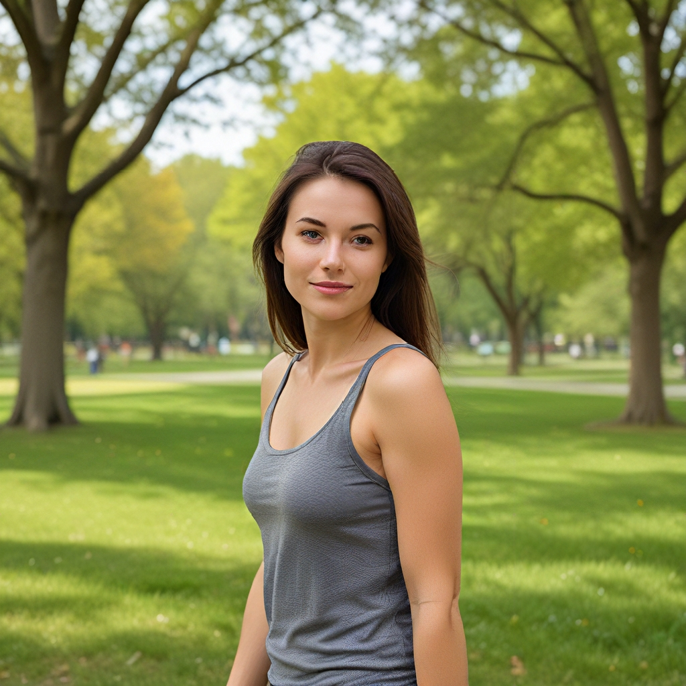
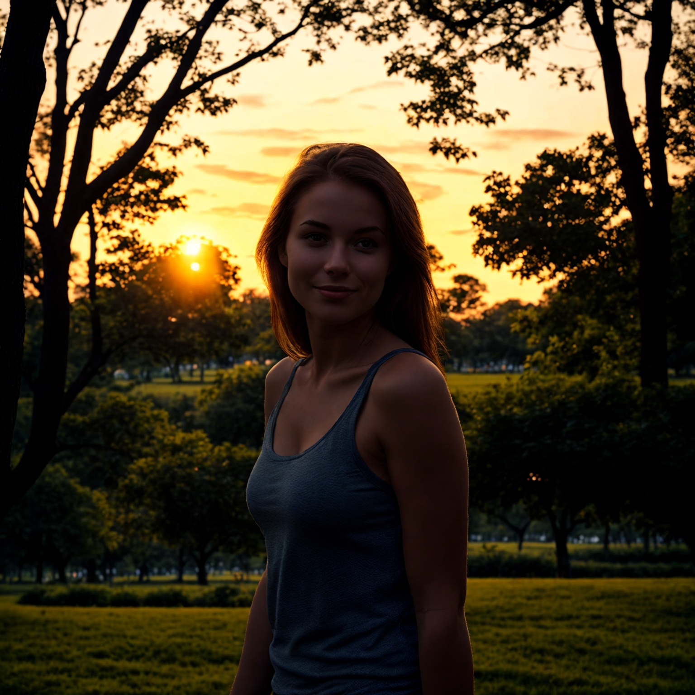

Veiledning for bruk av Relighting-funksjonen
Relighting-funksjonen i AiCasso er superkul! Den lar deg endre belysningen i bildene dine med bare noen få ord. Vil du ha solen i bakgrunnen eller et mykt lys fra siden? Ikke noe problem! Bare beskriv det, så tar AiCasso seg av resten.
Slik fungerer det:
Inngangsbildet:

Brukt prompt:
"Gjør det slik at solen er i bakgrunnen"
Resultat:

Valgfri justeringer
Hvis du føler deg eventyrlysten og vil legge til litt mer stil i relighting-prosessen, her er noen ting du kan justere:
- Negativ prompt: Vil du unngå noe? Du kan fortelle AiCasso hva ikke å inkludere. Men ikke bekymre deg, hvis du lar dette stå tomt, vil AiCasso bare fokusere på det du ønsker.
- Belysningsretning: Du kan spesifisere hvor lyset skal komme fra—venstre, høyre, topp, bunn, eller til og med ingen i det hele tatt. Som standard kommer lyset fra venstre.
- Veiledningsskala: Dette hjelper AiCasso med å holde seg til beskrivelsen din. Skalaen går fra 1 til 20, med 7 som standard. Jo høyere tall, jo mer holder AiCasso seg til prompten din.
- Høyoppløsningsskala: Vil du at bildet ditt skal poppe? Dette kontrollerer klarheten. Standard er 1.5, men du kan sette den fra 1.0 til 2.0 for et skarpere bilde.
- Denoise-nivåer: Det er to nivåer—lavoppløsning og høyoppløsning. Disse kontrollerer hvor jevnt eller detaljert det endelige bildet ser ut. Du kan sette lavoppløsnings denoise-nivået mellom 0.0 og 1.0 (standard er 0.9) og høyoppløsnings mellom 0.0 og 1.0 (standard er 0.5).
- Antall trinn: Dette er hvor mange trinn AiCasso tar for å polere bildet ditt. Standard er 50, men du kan gå fra 20 til 50 trinn.
Husk, disse justeringene er helt valgfrie! AiCasso er ganske flink til å finne ut hva du ønsker, så bare beskriv visjonen din med dine egne ord, så vil det gjøre magien. Ingen grunn til å være perfekt med grammatikk eller detaljer—bare ha det gøy og se hva du kan lage!